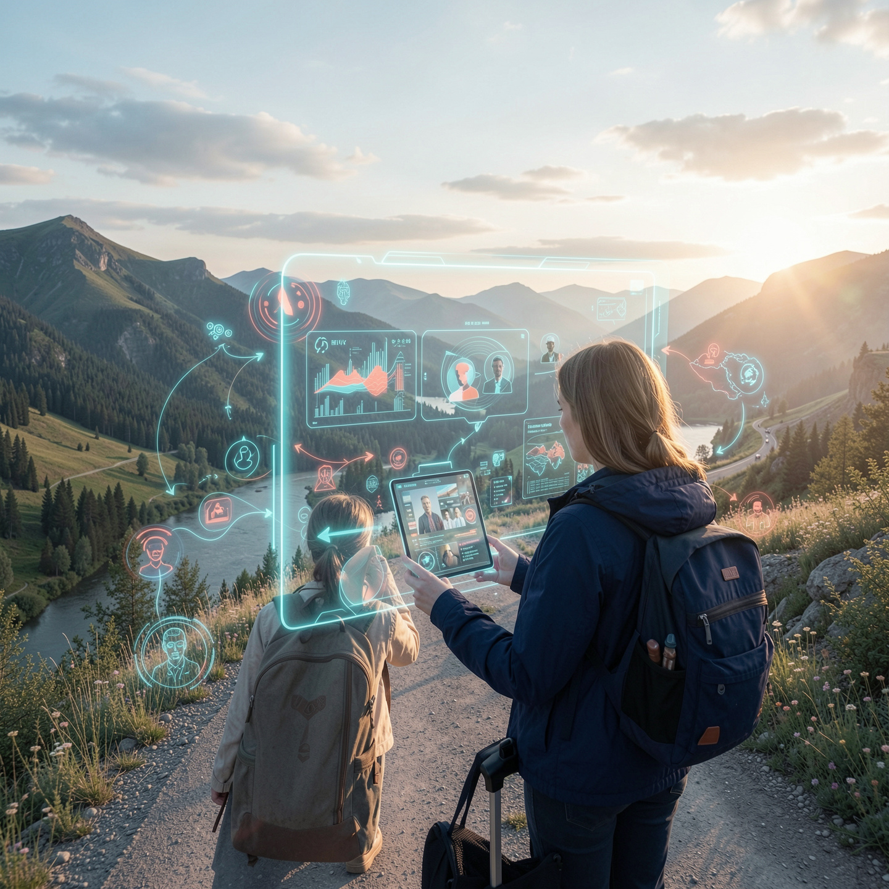
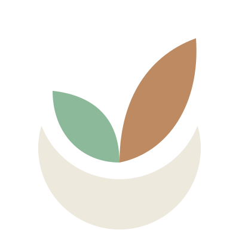

01 / INTELLIGENCE
AI Systems
Интеллектуальные системы и агенты, которые помогают анализировать, создавать и действовать. В центре внимания — надёжность, управляемость и практическая польза.
ИсследоватьINTELLIGENCE · SYSTEMS · ROBOTICS
Создаём искусственный интеллект, цифровые экосистемы и робототехнические решения, объединяя цифровой и физический миры.
Мы рассматриваем интеллект, программные платформы и робототехнику как части единой развивающейся среды. Наша цель — создавать полезные системы, которые можно развивать, соединять и адаптировать к реальному миру.
От цифрового интеллекта до физического взаимодействия — проектируем технологии как взаимосвязанные уровни.
Интеллектуальные системы и агенты, которые помогают анализировать, создавать и действовать. В центре внимания — надёжность, управляемость и практическая польза.
ИсследоватьСвязанные цифровые продукты и среды, в которых данные, сервисы, приложения и устройства работают как согласованное целое.
ИсследоватьРобототехнические решения на пересечении программного интеллекта, сенсорики, управления и физического взаимодействия.
ИсследоватьМы ищем точки взаимодействия человека и технологий, цифровой среды и физического мира, сегодняшних решений и завтрашних задач.
Проекты — практическое выражение нашей философии. Здесь будут появляться разработки, эксперименты и работающие прототипы.
Голосовой помощник для Android: слушает и помнит, работает с документами, фото и видео, переводит и сравнивает версии текстов. Обычный человеческий разговор вместо меню и кнопок.
В разработке · Android
Исследование цифрового пространства и новых способов взаимодействия с виртуальными мирами.
Проектный материалСоставление, правка и перевод документов с ИИ, сравнение версий — для самозанятых и малого бизнеса. Строится на том же движке, что и Барабашка.
ПланируетсяСтатусы и описания уточняются по мере развития проектов. Изображение ARхипелага — визуальный материал проекта, а не элемент фирменного знака.
Будущее не появляется само по себе. Оно складывается из вопросов, экспериментов и системных решений.

KOVCHEG SYSTEMS объединяет проекты и исследования в области искусственного интеллекта, цифровых экосистем и робототехники. Мы стремимся строить не набор разрозненных функций, а развиваемые системы с ясной архитектурой и долгосрочной ценностью.
Beyond the Horizon, Beyond Time!
Каталог наших продуктов и фирменные материалы для партнёров и прессы. Приложения появятся здесь сразу после релиза.
Философия, Барабашка, Ковчег Документы и направления компании — коротко и по делу.
Скачать каталогЗнаки и логотипы KOVCHEG SYSTEMS и Барабашки на тёмном и светлом фоне, одноцветные версии. Пришлём на почту по вашему запросу.
Запросить наборПриложение для Android. Ссылка на установку появится после выхода в RuStore.
СкороПартнёрство, пилотные проекты, вопросы по продуктам — пишите на почту. Отвечаем на письма.
kovcheg-systems@yandex.ru Вернуться наверх